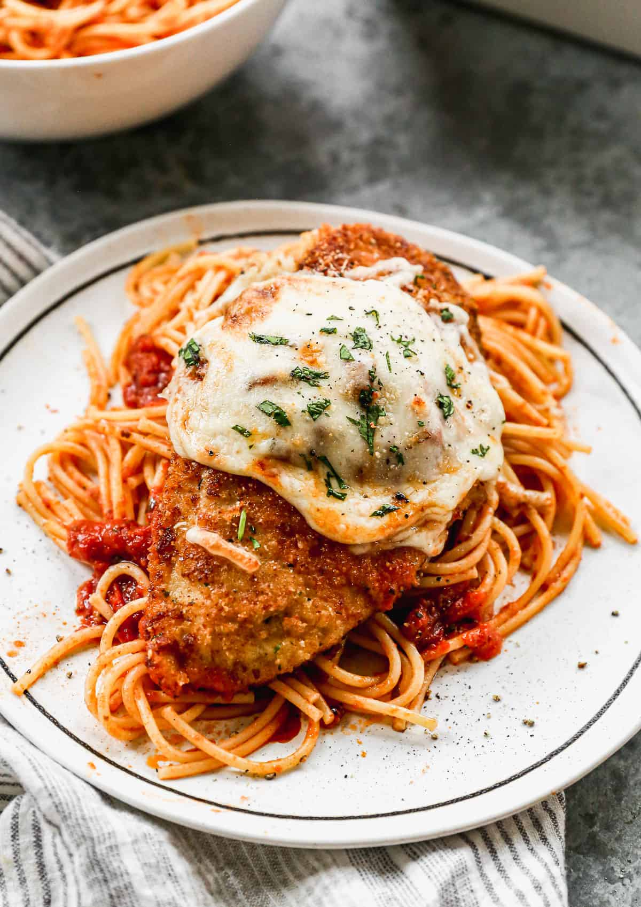

Home
Chicken Parmesan

Description
This easy Chicken Parmesan recipe is restaurant quality with breaded chicken, marinara sauce, mozzarella, and parmesan cheese. It’s simple, comforting, and will impress any guest!
This chicken parm recipe ranks right up there with some of my other favorite American-Italian foods including: Tuscan Garlic Chicken, and homemade Manicotti. Don’t forget to serve it with the easiest homemade marinara sauce and tiramisu for dessert!
Ingredients
- 3 boneless skinless chicken breasts, cut in half horizontally to make 6 breast halves*
- ½ cup freshly grated parmesan cheese, divided
- 2 eggs
- 1 cup panko bread crumbs
- 1 cup Italian style bread crumbs, or panko
- 1 teaspoon garlic powder
- 3 Tablespoons oil
- 24 ounces marinara sauce, or HOMEMADE
- 1 cup shredded mozzarella cheese
- fresh basil leaves, for serving
Steps
- Preheat oven to 450 degrees F.
- Butterfly chicken breasts: Place one hand on top of the breast and carefully run a knife through the center of the meat to create two, even, thin breast halves.
- Pat chicken dry and season well on both sides with salt and pepper.
- Add eggs to a shallow bowl and beat well. Add breadcrumbs, parmesan and garlic powder to another shallow bowl and stir to combine.
- Dip each piece of chicken into the egg mixture, and then press into breadcrumbs, coating on both sides.
- Add oil to a large skillet over medium-high heat. Once hot, add breaded chicken and cook for about 2 minutes on each side, until golden, but not cooked through.
- Spoon a thin layer of marinara sauce into a 9×13’’ baking pan, to cover the bottom of the pan. Place breaded chicken on top.
- Add a spoonful of marinara sauce over the chicken, followed by a sprinkle of mozzarella and parmesan cheese.
- Bake for 10-15 minutes or until cheese is melted and bubbly and chicken is cooked through (165 degrees F).
- Garnish with fresh chopped basil. Serve over hot cooked spaghetti noodles, with extra sauce, if desired.